A gallery of Euler and Venn diagrams
This page is a gallery of Euler and Venn diagrams and a showcase of the customization options available through eunoiaplot. It is the Julia counterpart to the eulerr gallery and the eunoia-py gallery.
Rendering lives in a Makie extension that loads once a backend is imported. Here we use CairoMakie, a software backend that needs no display.
using Eunoia, CairoMakie
CairoMakie.activate!(type = "png") # raster output for the galleryThe styling keywords (colors, fills, edges, labels, quantities, legend, complement) mirror the Python API, but their values are Makie attributes. A matplotlib style dict like {"linestyle": "--"} becomes Dict(:linestyle => :dash), a fill's "facecolor" becomes :color, and so on. A uniform style is a Dict with Symbol keys; a per-set or per-region map is a Dict keyed by name whose values are style collections (a Dict or a (; key = value) named tuple).
Euler Diagrams
Uniform Intersections
Here we use squares instead of the default circles.
fit = euler(
Dict(
"A" => 10,
"B" => 10,
"C" => 10,
"A&B" => 4,
"A&C" => 4,
"B&C" => 4,
"A&B&C" => 2,
);
shape = "square",
)
eunoiaplot(fit)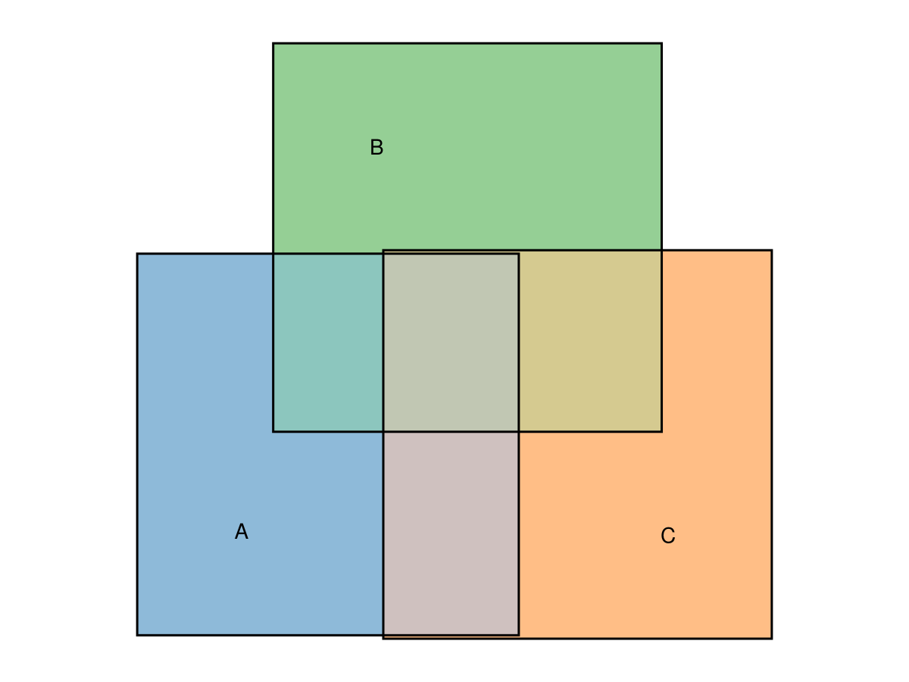
Disjoint Sets
Rename the sets simply by choosing the dictionary keys. A flat edges style is applied to every outline.
fit = euler(Dict("Tom" => 1, "Greg" => 1, "Alberta" => 1))
eunoiaplot(fit; edges = Dict(:linestyle => :dash))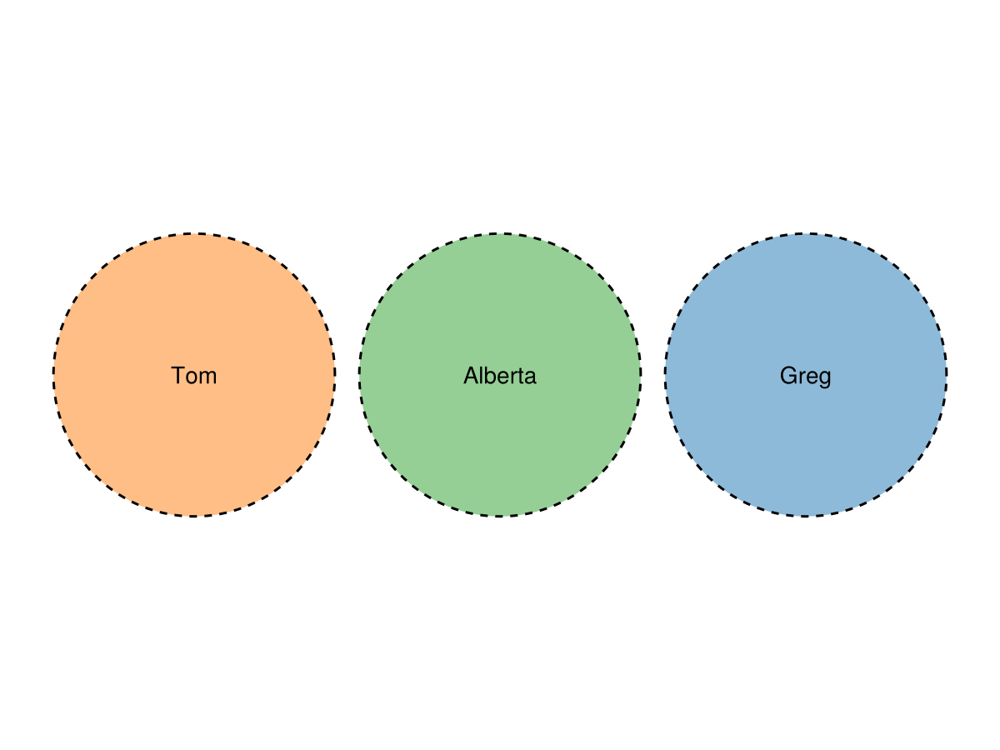
To style each outline independently, pass edges as a Dict keyed by set name (each value a collection of lines! keywords) or as a vector of such collections, one per set in shape order — mirroring how colors accepts a per-set Dict.
fit = euler(Dict("Tom" => 1, "Greg" => 1, "Alberta" => 1))
eunoiaplot(
fit;
edges = Dict(
"Tom" => (; linestyle = :dash, linewidth = 2),
"Greg" => (; linestyle = :dot),
),
)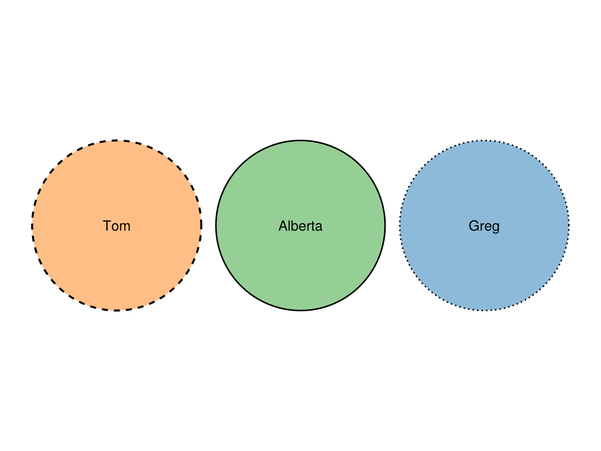
A Set Contained in the Intersection of Two Sets
fit = euler(
Dict(
"A" => 15,
"B" => 15,
"C" => 0,
"A&B" => 3,
"A&C" => 0,
"B&C" => 0,
"A&B&C" => 3,
),
)
eunoiaplot(
fit;
colors = ["black", "cyan", "orange"],
edges = Dict(:color => :white, :linewidth => 2),
)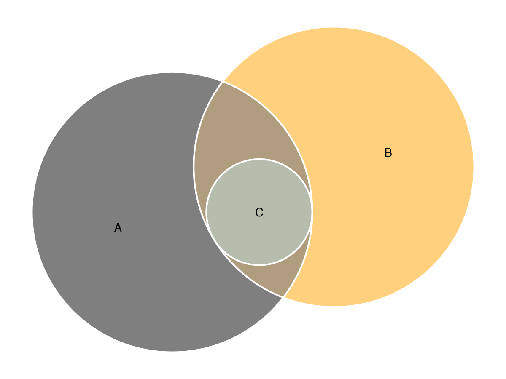
Two Sets Intersecting Inside a Third
Here we override individual region fills with per-region fills styles.
fit = euler(
Dict(
"A" => 15,
"B" => 0,
"C" => 0,
"A&B" => 3,
"A&C" => 3,
"B&C" => 0,
"A&B&C" => 2,
),
)
eunoiaplot(
fit;
fills = Dict(
"A&B&C" => (; color = :orange),
"A&B" => (; color = :lightblue),
"A&C" => (; color = :lightsalmon),
),
)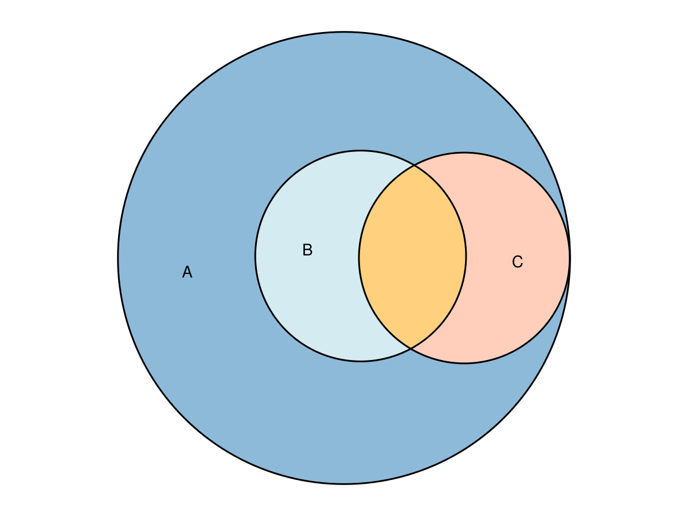
Difficult Set (For Circles!)
This relationship cannot be drawn exactly with circles but works well with ellipses.
fit = euler(
Dict("A" => 7, "B" => 6, "C" => 0, "A&B" => 0, "A&C" => 1, "B&C" => 1, "A&B&C" => 2);
shape = "ellipse",
)
eunoiaplot(fit; quantities = true)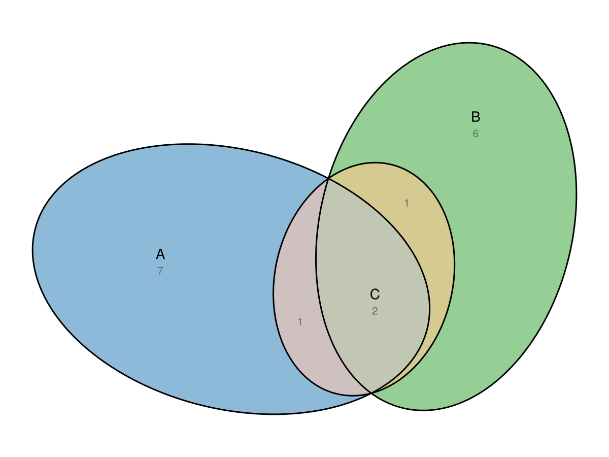
Russian Doll
Sets intersecting inside other sets.
fit = euler(
Dict(
"A" => 15,
"B" => 0,
"C" => 0,
"A&B" => 10,
"A&C" => 0,
"B&C" => 0,
"A&B&C" => 5,
),
)
eunoiaplot(fit)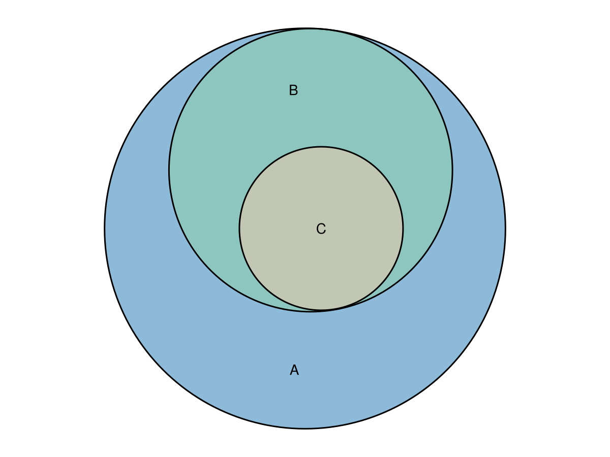
Wilkinson Set Relationship
This set relationship is taken from Wilkinson et al. It works best with ellipses. We show the fitted values rather than the requested ones.
fit = euler(
Dict(
"A" => 4,
"B" => 6,
"C" => 3,
"D" => 2,
"E" => 7,
"F" => 3,
"A&B" => 2,
"A&F" => 2,
"B&C" => 2,
"B&D" => 1,
"B&F" => 2,
"C&D" => 1,
"D&E" => 1,
"E&F" => 1,
"A&B&F" => 1,
"B&C&D" => 1,
);
shape = "ellipse",
)
eunoiaplot(fit; quantities = "fitted", edges = Dict(:linestyle => :dot))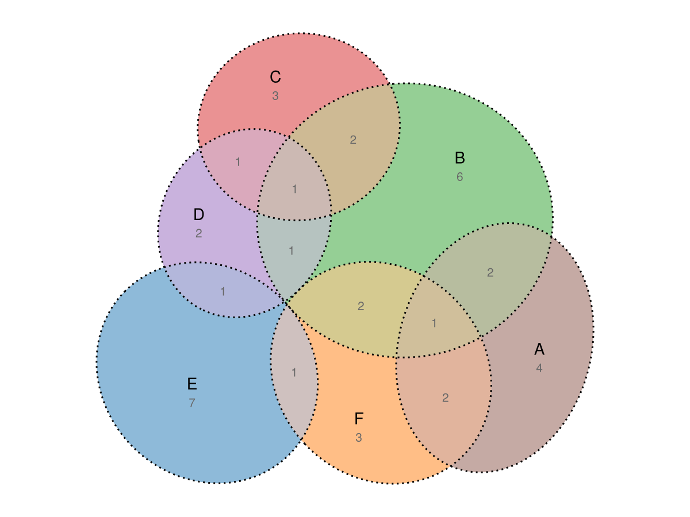
Gene Set
fit = euler(
Dict(
"SE" => 13,
"Treat" => 28,
"Anti-CCP" => 101,
"DAS28" => 91,
"SE&Treat" => 1,
"SE&DAS28" => 14,
"Treat&Anti-CCP" => 6,
"SE&Anti-CCP&DAS28" => 1,
),
)
eunoiaplot(fit; quantities = true)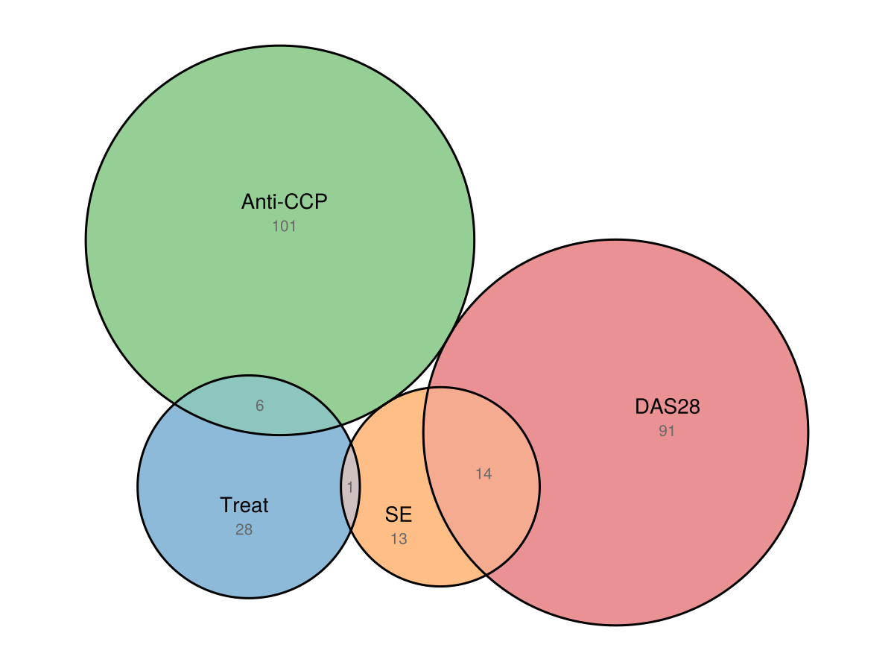
Three sets intersecting inside a fourth
fit = euler(
Dict(
"A" => 30,
"A&B" => 3,
"A&C" => 3,
"A&D" => 3,
"A&B&C" => 0.4,
"A&B&D" => 0.4,
"A&C&D" => 0.4,
"A&B&C&D" => 1,
),
)
eunoiaplot(fit)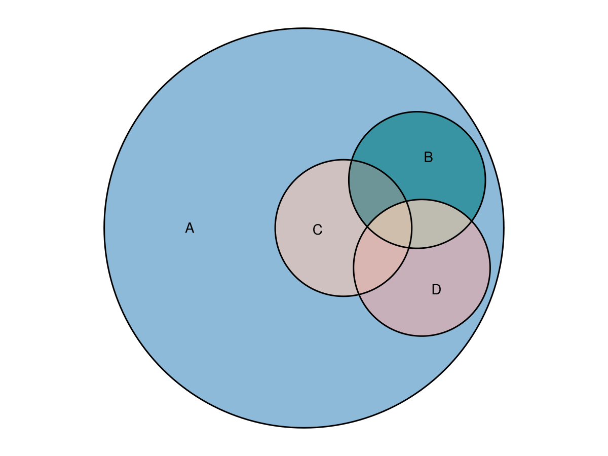
eulerAPE Combination
A combination taken from the eulerAPE article, fit with ellipses.
fit = euler(
Dict(
"a" => 3491,
"b" => 3409,
"c" => 3503,
"a&b" => 120,
"a&c" => 114,
"b&c" => 132,
"a&b&c" => 126,
);
shape = "ellipse",
)
eunoiaplot(fit)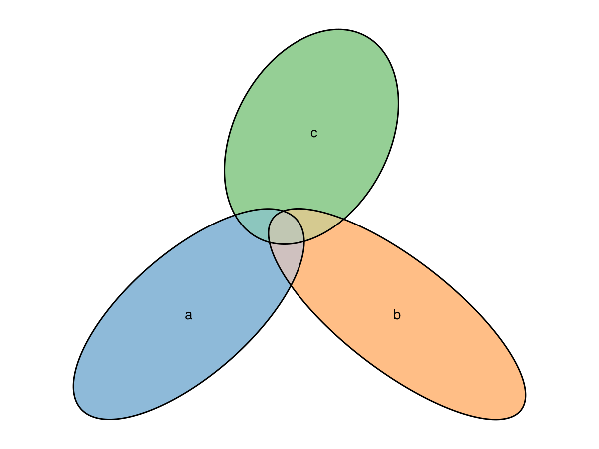
Four Uniform Interactions
This time we fit the diagram using rectangles.
fit = euler(
Dict(
"Frodo" => 10,
"Sam" => 10,
"Merry" => 10,
"Pippin" => 10,
"Frodo&Sam" => 3,
"Frodo&Merry" => 3,
"Frodo&Pippin" => 0,
"Sam&Merry" => 0,
"Sam&Pippin" => 3,
"Merry&Pippin" => 3,
"Frodo&Sam&Merry" => 1,
"Frodo&Sam&Pippin" => 1,
"Frodo&Merry&Pippin" => 1,
"Sam&Merry&Pippin" => 1,
"Frodo&Sam&Merry&Pippin" => 1,
);
shape = "rectangle",
)
eunoiaplot(fit)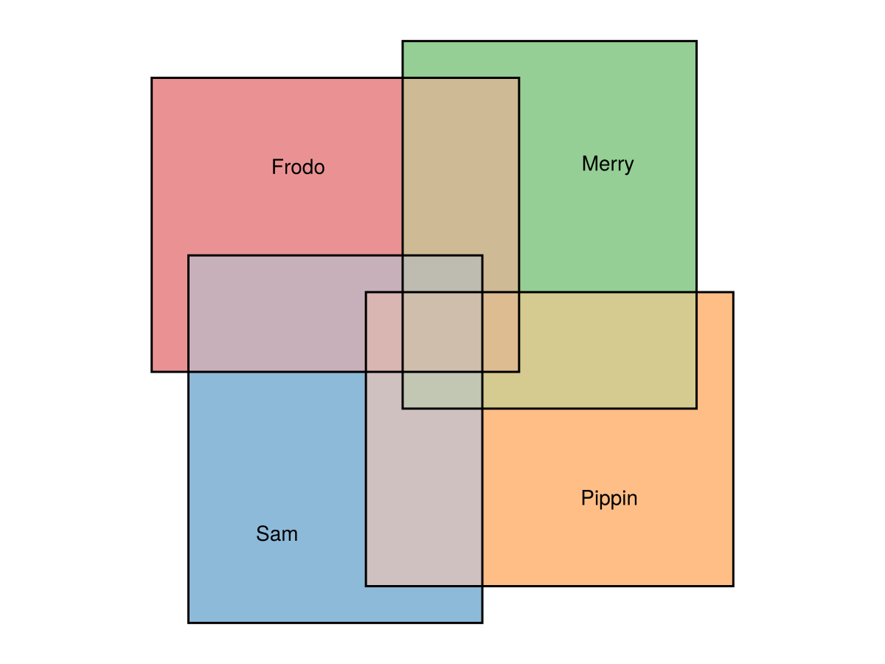
Rotated Rectangles
Rectangles can also be fit with a free rotation angle (shape = "rotated_rectangle"), which gives the optimizer an extra degree of freedom and suits the diagonal four-set arrangement well.
fit = euler(
Dict(
"Frodo" => 10,
"Sam" => 10,
"Merry" => 10,
"Pippin" => 10,
"Frodo&Sam" => 3,
"Frodo&Merry" => 3,
"Sam&Pippin" => 3,
"Merry&Pippin" => 3,
"Frodo&Sam&Merry" => 1,
"Frodo&Sam&Pippin" => 1,
"Frodo&Merry&Pippin" => 1,
"Sam&Merry&Pippin" => 1,
"Frodo&Sam&Merry&Pippin" => 1,
);
shape = "rotated_rectangle",
)
eunoiaplot(fit)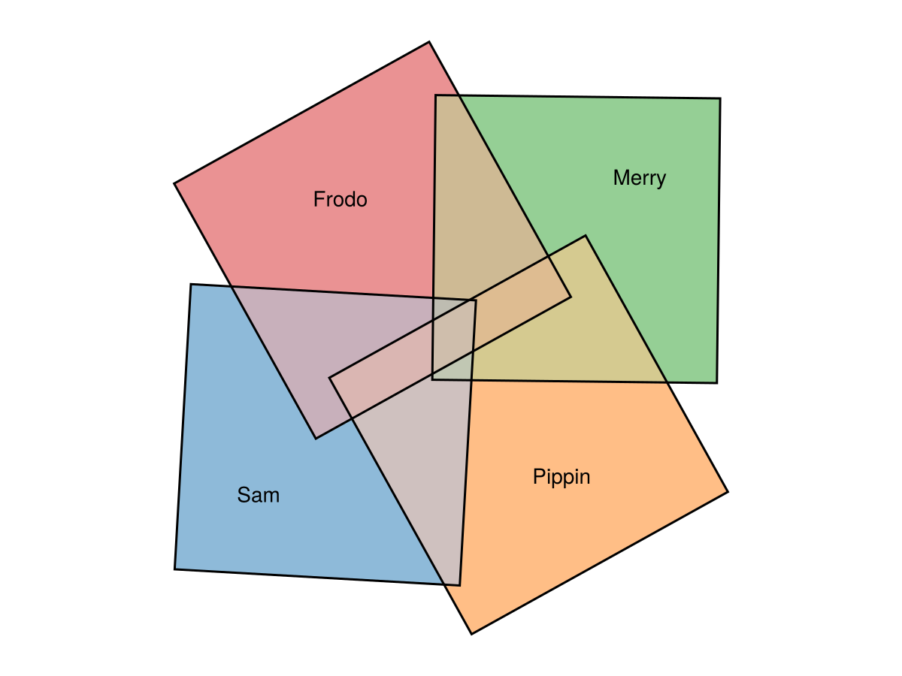
Two Circles Intersecting Completely
fit = euler(Dict("A" => 0, "B" => 0, "A&B" => 10))
eunoiaplot(fit)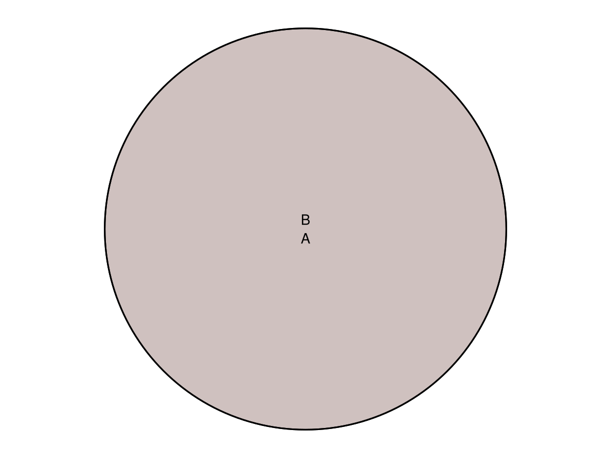
Styling and the Complement
A Universe (Complement) Box
Pass complement to euler to reserve area outside every set; it comes back as a container that eunoiaplot draws behind everything. The complement plot keyword styles that box.
fit = euler(Dict("A" => 10, "B" => 8, "A&B" => 4); complement = 20)
eunoiaplot(fit; complement = Dict(:color => "#eeeeee"), quantities = true)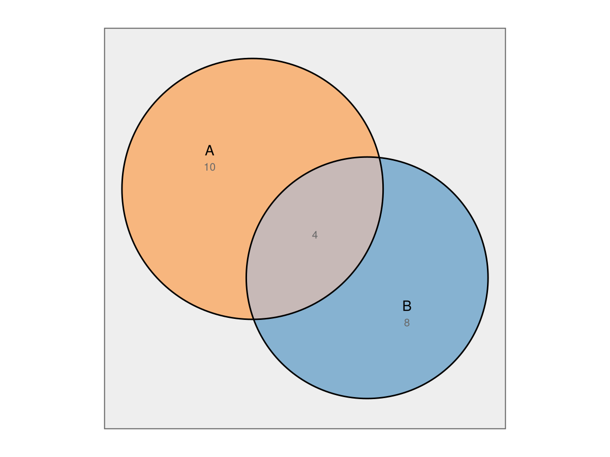
Colors As a Sequence or a Mapping
colors accepts either a vector (one per set, in fit order) or a mapping from set name to color.
fit = euler(
Dict("A" => 10, "B" => 7, "C" => 8, "A&B" => 3, "A&C" => 4, "B&C" => 2, "A&B&C" => 1),
)
eunoiaplot(fit; colors = Dict("A" => "#e41a1c", "B" => "#377eb8", "C" => "#4daf4a"))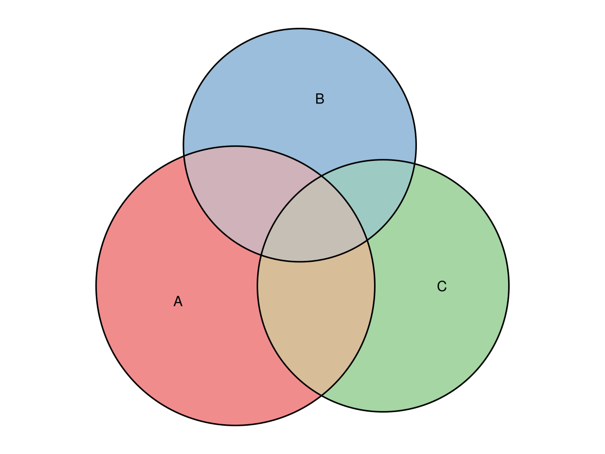
A Legend Instead of Inline Labels
When sets are small or crowded their inline labels can overlap. Passing legend = true moves the set names into a color-keyed legend and turns the inline labels off by default (pass labels = true to keep both). A Dict or named tuple is forwarded to Makie's Legend, so you can control its title and appearance.
fit = euler(
Dict("A" => 10, "B" => 7, "C" => 8, "A&B" => 3, "A&C" => 4, "B&C" => 2, "A&B&C" => 1),
)
eunoiaplot(fit; legend = Dict(:title => "Sets"))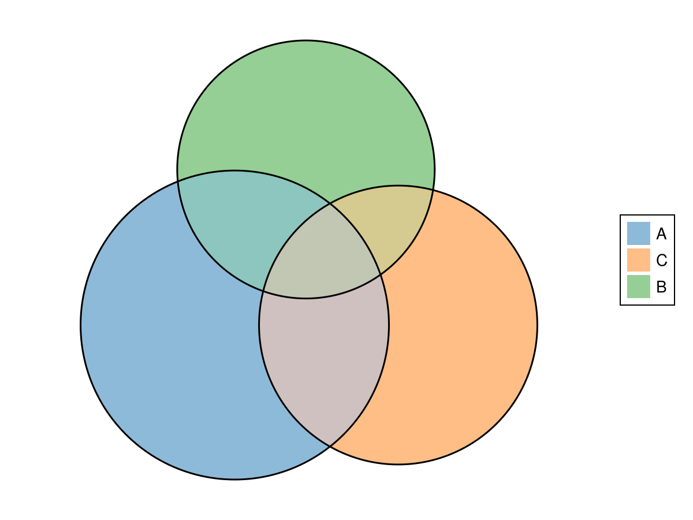
Custom label text and style
labels can be a Dict for per-set control. Map a set name to a replacement string, to a collection of text! keywords (with an optional :text key for custom text), or to nothing/false to hide that set's label. A style Dict whose keys are not set names — e.g. Dict(:fontsize => 14) — is a uniform style applied to every label instead.
fit = euler(Dict("alpha" => 10, "beta" => 7, "alpha&beta" => 3))
eunoiaplot(
fit;
labels = Dict(
"alpha" => (; text = "α", fontsize = 22),
"beta" => (; text = "β", fontsize = 22, color = :crimson),
),
)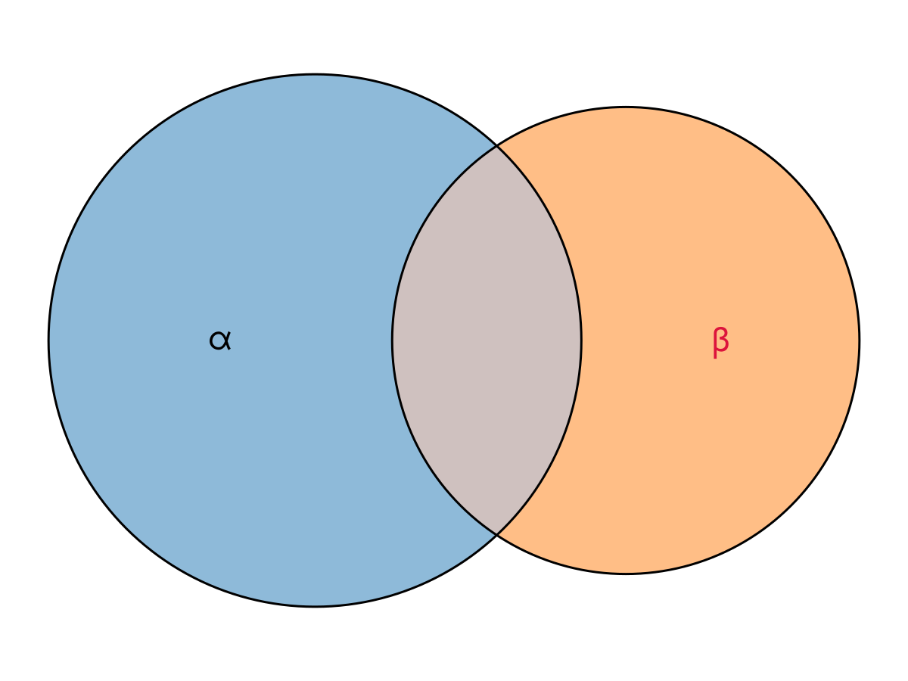
Original versus Fitted Quantities
To place two diagrams side by side and compare the requested values against what the layout achieved, pass a figure layout cell to eunoiaplot — eunoiaplot(f[1, 1], fit) creates a diagram-configured panel (equal aspect, hidden decorations) in that cell, so we don't build each Axis by hand. Per-panel options like a title go through axis.
fit = euler(
Dict("A" => 7, "B" => 6, "A&C" => 1, "B&C" => 1, "A&B&C" => 2, "C" => 0);
shape = "ellipse",
)
f = Figure(size = (900, 400))
eunoiaplot(f[1, 1], fit; quantities = "original", axis = (; title = "original"))
eunoiaplot(f[1, 2], fit; quantities = "fitted", axis = (; title = "fitted"))
f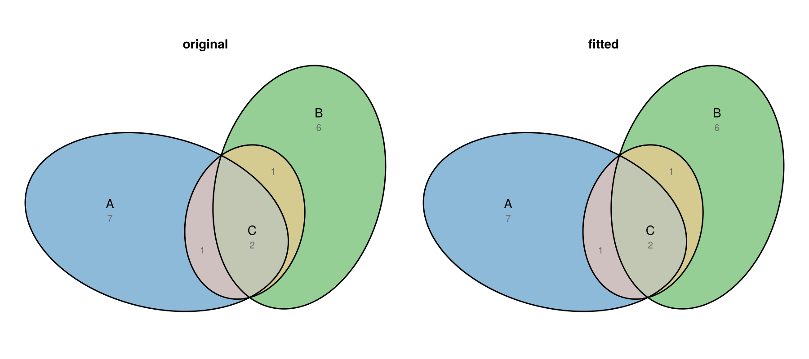
Counts and Percentages
quantities also chooses how to display each region. A string picks the display type—"counts" (the raw value, the default) or "percent" (the region's share of the total)—while a Dict or named tuple combines a type, a value source (:source), and text styling. Passing both types stacks the count above its percentage.
fit = euler(
Dict(
"SE" => 13,
"Treat" => 28,
"Anti-CCP" => 101,
"DAS28" => 91,
"SE&Treat" => 1,
"SE&DAS28" => 14,
"Treat&Anti-CCP" => 6,
"SE&Anti-CCP&DAS28" => 1,
),
)
eunoiaplot(fit; quantities = Dict(:type => ["counts", "percent"], :fontsize => 8))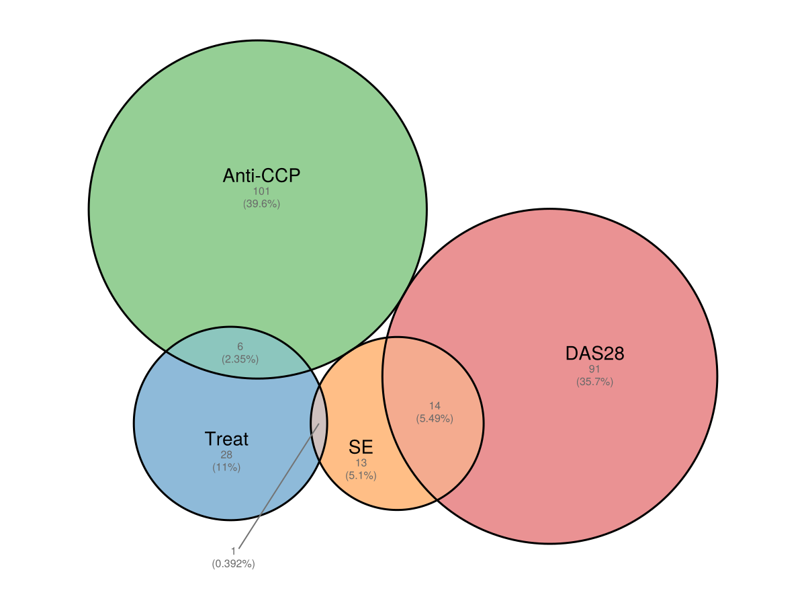
Venn Diagrams
venn draws topological (non-proportional) Venn diagrams. It accepts an integer count, a vector of names, or a mapping.
Circle Venn diagrams are unsupported in the pinned Eunoia core and raise an error. Use ellipses (1–5 sets) or squares/rectangles (1–3 sets); the examples below pass shape explicitly.
Two and Three Sets
f = Figure(size = (900, 400))
eunoiaplot(f[1, 1], venn(2; shape = "ellipse"))
eunoiaplot(f[1, 2], venn(["A", "B", "C"]; shape = "ellipse"))
f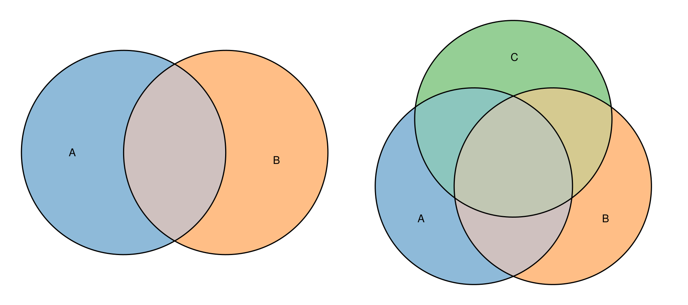
Four and Five Sets
f = Figure(size = (900, 400))
eunoiaplot(f[1, 1], venn(4; shape = "ellipse"))
eunoiaplot(f[1, 2], venn(5; shape = "ellipse"))
f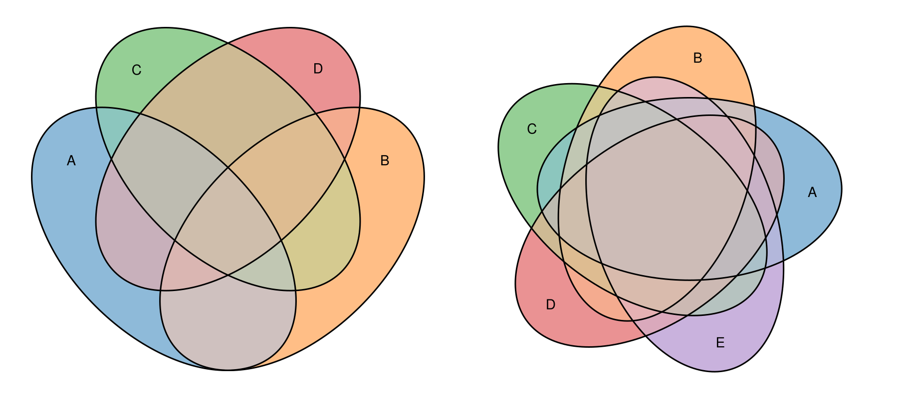
Squares
Venn diagrams of up to three sets can be drawn with square shapes instead of the default ellipse. Here the two sit side by side for the same three sets.
f = Figure(size = (900, 400))
eunoiaplot(f[1, 1], venn(3; shape = "ellipse"); axis = (; title = "ellipse"))
eunoiaplot(f[1, 2], venn(3; shape = "square"); axis = (; title = "square"))
f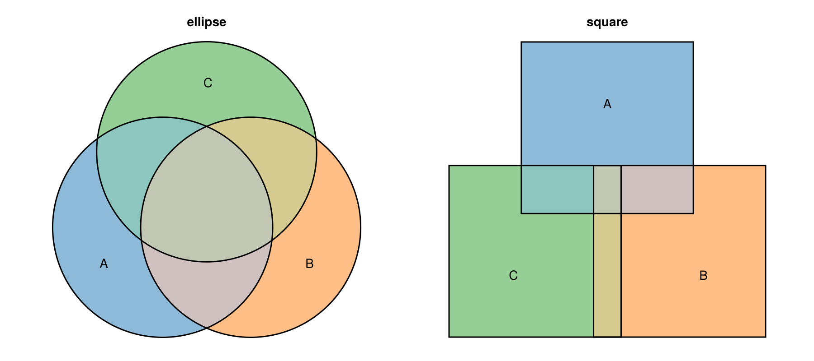
"rectangle" is accepted too (up to three sets), but the symmetric Venn layout renders it identically to a square. Rectangles only differ from squares in area-proportional Euler diagrams.
Rotated Rectangles for Four Sets
"rotated_rectangle" draws a four-set Venn diagram with rotated rectangles, an arrangement that ellipses cannot lay out symmetrically.
eunoiaplot(venn(4; shape = "rotated_rectangle"))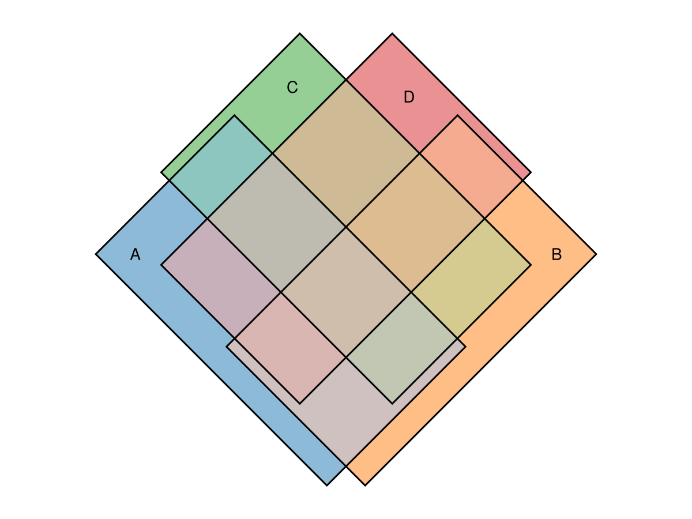
A Complement Box
venn also takes a complement size, just like euler, reserving area outside every set as a "universe" frame around the diagram.
eunoiaplot(
venn(3; shape = "ellipse", complement = 5);
complement = Dict(:color => "#eeeeee"),
)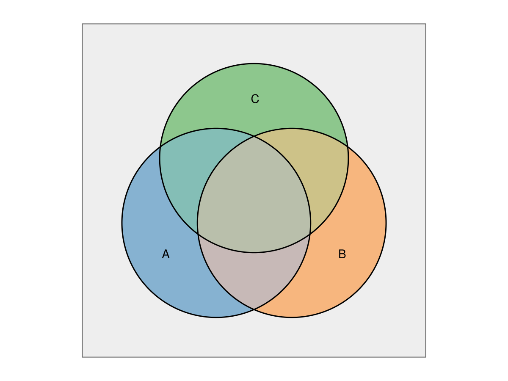
From Membership Lists
venn accepts the same membership-list input as euler; it only needs the set names.
eunoiaplot(
venn(Dict("A" => ["x", "y", "z"], "B" => ["y", "z", "w"], "C" => ["z", "w", "q"]);
shape = "ellipse"),
)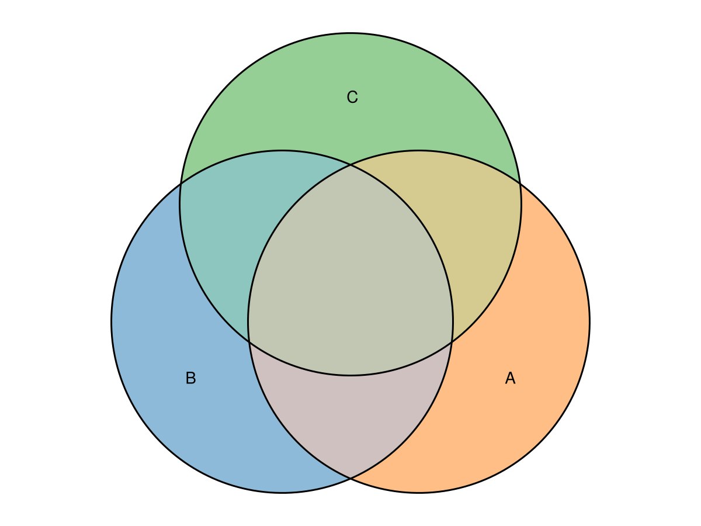